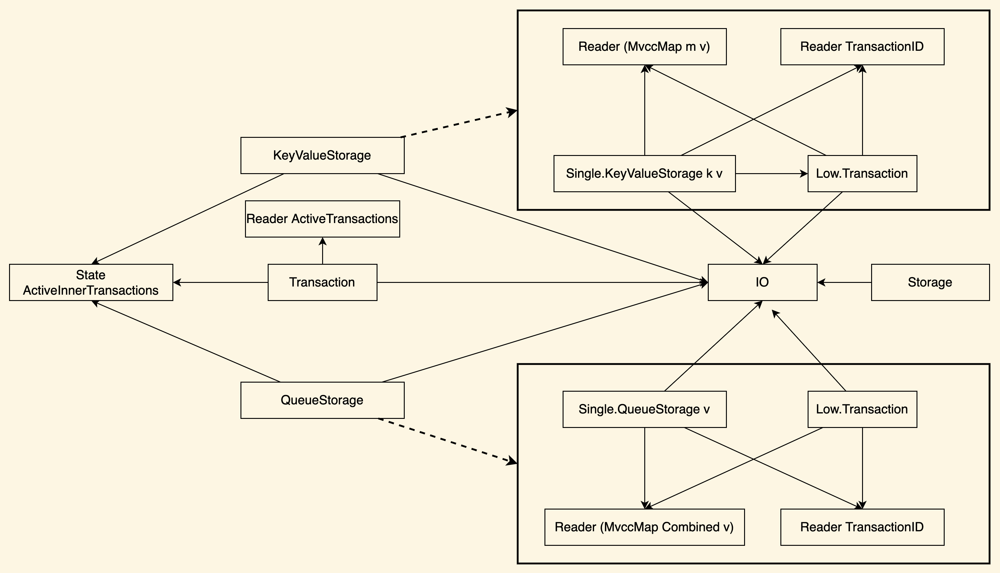

data Database data StorageName key value
lookup :: Database -> StorageName k v -> k -> m (Maybe v) insert :: Database -> StorageName k v -> k -> v -> m () modify :: Database -> StorageName k v -> k -> (v -> v) -> m () delete :: Database -> StorageName k v -> k -> m ()
push :: Database -> StorageName k v -> v -> m () pull :: Database -> StorageName k v -> m v peek :: Database -> StorageName k v -> m v pullIfExist :: Database -> StorageName k v -> m (Maybe v) peekIfExist :: Database -> StorageName k v -> m (Maybe v)
prepare :: PrepareT (CancelTransaction :+: ToSum effs) sig m a -> m (Either TransactionError (PreparedTransaction a)) unsafePrepare :: m a -> m (Either TransactionError (PreparedTransaction a)) commit :: PreparedTransaction a -> m (Either TransactionError a) rollback :: PreparedTransaction a -> m (Maybe TransactionError)
storageName :: StorageName Key Int storageName = "some_storage"
initDBs :: Has (Lift IO) sig m => m (Database, Database) initDBs = do dbCounter <- initDBCounter flip runReaderT dbCounter $ runCombinedSyncDatabaseC do db1 <- initDB db2 <- initDB addStorage storageName [Queue, KeyValue] db1 addStorage storageName [Queue, KeyValue] db2 pure (db1, db2)
processReader :: ( Has (Lift IO) sig m , Has QueueStorage sig m ) => Database -> m () processReader db = fix $ \repeat -> do nextInt <- (read @Int) <$> sendIO getLine push db storageName nextInt repeat
processCalculator :: ( Has (Lift IO) sig m , Has QueueStorage sig m , Has Transaction sig m ) => Database -> Database -> m () processCalculator dbFrom dbTo = fix $ \repeat -> do eResult <- prepare @'[QueueStorage] do received <- pull dbFrom storageName push dbTo storageName (received + 1) result <- either throwIO pure eResult either throwIO pure =<< commit result repeat
processPrinter :: ( Has (Lift IO) sig m , Has QueueStorage sig m ) => Database -> m () processPrinter db = fix $ \repeat -> do nextInt <- pull db storageName sendIO $ print nextInt repeat
eResult <- prepare @'[QueueStorage] do received <- pull dbFrom storageName push dbTo storageName (received + 1)
eResult <- prepare @'[QueueStorage] do received <- pull dbFrom storageName when (received /= 0) $ cancel "Not zero" push dbTo storageName (received + 1)
eResult <- prepare @'[QueueStorage, KeyValueStorage] do received <- pull dbFrom storageName push dbTo storageName (received + 1) insert otherDB someStorage someKey received
eResult <- prepare @'[QueueStorage, KeyValueStorage] do received <- pull dbFrom storageName push dbTo storageName (received + 1) insert otherDB someStorage someKey received rollback $ eResult ^?! _Right
unsafePrepare do received <- pull dbFrom storageName sendIO $ putStrLn "Some side effect" push dbTo storageName (received + 1)
unsafePrepare do received <- pull dbFrom storageName throwIO SomeException push dbTo storageName (received + 1)